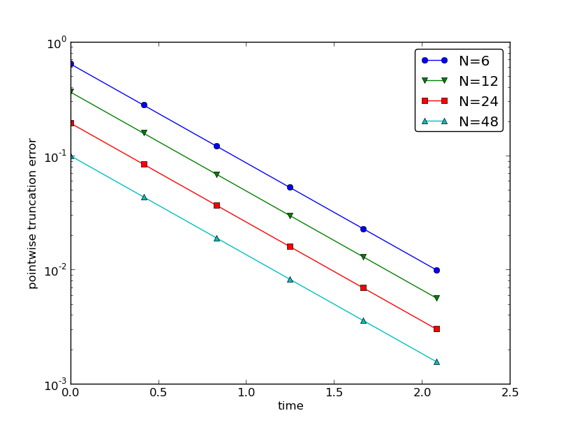

Figure 2: Difference between theoretical and estimated truncation error at mesh points for different meshes.

We shall now compute the truncation error of a finite difference scheme for a differential equation. Our first problem involves the following the linear ODE modeling exponential decay, $$ \begin{equation} u'(t)=-au(t)\tp \tag{27} \end{equation} $$
We begin with the Forward Euler scheme for discretizing (27): $$ \begin{equation} \lbrack D_t^+ u = -au \rbrack^n \tag{28} \tp \end{equation} $$ The idea behind the truncation error computation is to insert the exact solution \( \uex \) of the differential equation problem (27) in the discrete equations (28) and find the residual that arises because \( \uex \) does not solve the discrete equations. Instead, \( \uex \) solves the discrete equations with a residual \( R^n \): $$ \begin{equation} [D_t^+ \uex + a\uex = R]^n \tag{29} \tp \end{equation} $$ From (11)-(12) it follows that $$ [D_t^+ \uex]^n = \uex'(t_n) + \half\uex''(t_n)\Delta t + \Oof{\Delta t^2},$$ which inserted in (29) results in $$ \uex'(t_n) + \half\uex''(t_n)\Delta t + \Oof{\Delta t^2} + a\uex(t_n) = R^n \tp $$ Now, \( \uex'(t_n) + a\uex^n = 0 \) since \( \uex \) solves the differential equation. The remaining terms constitute the residual: $$ \begin{equation} R^n = \half\uex''(t_n)\Delta t + \Oof{\Delta t^2} \tag{30} \tp \end{equation} $$ This is the truncation error \( R^n \) of the Forward Euler scheme.
Because \( R^n \) is proportional to \( \Delta t \), we say that the Forward Euler scheme is of first order in \( \Delta t \). However, the truncation error is just one error measure, and it is not equal to the true error \( \uex^n - u^n \). For this simple model problem we can compute a range of different error measures for the Forward Euler scheme, including the true error \( \uex^n - u^n \), and all of them have dominating terms proportional to \( \Delta t \).
For the Crank-Nicolson scheme, $$ \begin{equation} [D_t u = -au]^{n+\half}, \tag{31} \end{equation} $$ we compute the truncation error by inserting the exact solution of the ODE and adding a residual \( R \), $$ \begin{equation} [D_t \uex + a\overline{\uex}^{t} = R]^{n+\half} \tp \tag{32} \end{equation} $$ The term \( [D_t\uex]^{n+\half} \) is easily computed from (5)-(6) by replacing \( n \) with \( n+{\half} \) in the formula, $$ \lbrack D_t\uex\rbrack^{n+\half} = u'(t_{n+\half}) + \frac{1}{24}\uex'''(t_{n+\half})\Delta t^2 + \Oof{\Delta t^4}\tp $$ The arithmetic mean is related to \( u(t_{n+\half}) \) by (21)-(22) so $$ [a\overline{\uex}^{t}]^{n+\half} = u(t_{n+\half}) + \frac{1}{8}u''(t_{n})\Delta t^2 + + \Oof{\Delta t^4}\tp$$ Inserting these expressions in (32) and observing that \( \uex'(t_{n+\half}) +a\uex^{n+\half} = 0 \), because \( \uex(t) \) solves the ODE \( u'(t)=-au(t) \) at any point \( t \), we find that $$ \begin{equation} R^{n+\half} = \left( \frac{1}{24}\uex'''(t_{n+\half}) + \frac{1}{8}u''(t_{n}) \right)\Delta t^2 + \Oof{\Delta t^4} \tag{33} \end{equation} $$ Here, the truncation error is of second order because the leading term in \( R \) is proportional to \( \Delta t^2 \).
At this point it is wise to redo some of the computations above to establish the truncation error of the Backward Euler scheme, see Exercise 4: Truncation error of the Backward Euler scheme.
We may also compute the truncation error of the \( \theta \)-rule, $$ [\bar D_t u = -a\overline{u}^{t,\theta}]^{n+\theta} \tp $$ Our computational task is to find \( R^{n+\theta} \) in $$ [\bar D_t \uex + a\overline{\uex}^{t,\theta} = R]^{n+\theta} \tp $$ From (13)-(14) and (19)-(20) we get expressions for the terms with \( \uex \). Using that \( \uex'(t_{n+\theta}) + a\uex(t_{n+\theta})=0 \), we end up with $$ \begin{align} R^{n+\theta} = &({\half}-\theta)\uex''(t_{n+\theta})\Delta t + \half\theta (1-\theta)\uex''(t_{n+\theta})\Delta t^2 + \nonumber\\ & \half(\theta^2 -\theta + 3)\uex'''(t_{n+\theta})\Delta t^2 + \Oof{\Delta t^3} \tag{34} \end{align} $$ For \( \theta =1/2 \) the first-order term vanishes and the scheme is of second order, while for \( \theta\neq 1/2 \) we only have a first-order scheme.
The previously mentioned truncation_error module can be used to
automate the Taylor series expansions and the process of
collecting terms. Here is an example on possible use:
from truncation_error import DiffOp
from sympy import *
def decay():
u, a = symbols('u a')
diffop = DiffOp(u, independent_variable='t',
num_terms_Taylor_series=3)
D1u = diffop.D(1) # symbol for du/dt
ODE = D1u + a*u # define ODE
# Define schemes
FE = diffop['Dtp'] + a*u
CN = diffop['Dt' ] + a*u
BE = diffop['Dtm'] + a*u
theta = diffop['barDt'] + a*diffop['weighted_arithmetic_mean']
theta = sm.simplify(sm.expand(theta))
# Residuals (truncation errors)
R = {'FE': FE-ODE, 'BE': BE-ODE, 'CN': CN-ODE,
'theta': theta-ODE}
return R
The returned dictionary becomes
decay: {
'BE': D2u*dt/2 + D3u*dt**2/6,
'FE': -D2u*dt/2 + D3u*dt**2/6,
'CN': D3u*dt**2/24,
'theta': -D2u*a*dt**2*theta**2/2 + D2u*a*dt**2*theta/2 -
D2u*dt*theta + D2u*dt/2 + D3u*a*dt**3*theta**3/3 -
D3u*a*dt**3*theta**2/2 + D3u*a*dt**3*theta/6 +
D3u*dt**2*theta**2/2 - D3u*dt**2*theta/2 + D3u*dt**2/6,
}
The results are in correspondence with our hand-derived expressions.
The task of this section is to demonstrate how we can compute the truncation error \( R \) numerically. For example, the truncation error of the Forward Euler scheme applied to the decay ODE \( u'=-ua \) is $$ \begin{equation} R^n = [D_t^+\uex + a\uex]^n \tag{35} \tp \end{equation} $$ If we happen to know the exact solution \( \uex(t) \), we can easily evaluate \( R^n \) from the above formula.
To estimate how \( R \) varies with the discretization parameter \( \Delta
t \), which has been our focus in the previous mathematical derivations,
we first make the assumption that \( R=C\Delta t^r \) for
appropriate constants \( C \) and
\( r \) and small enough \( \Delta t \). The rate \( r \) can be estimated from a series
of experiments where \( \Delta t \) is varied. Suppose we have
\( m \) experiments \( (\Delta t_i, R_i) \), \( i=0,\ldots,m-1 \).
For two consecutive experiments \( (\Delta t_{i-1}, R_{i-1}) \)
and \( (\Delta t_i, R_i) \), a corresponding \( r_{i-1} \) can be estimated by
$$
\begin{equation}
r_{i-1} = \frac{\ln (R_{i-1}/R_i)}{\ln (\Delta t_{i-1}/\Delta t_i)},
\tag{36}
\end{equation}
$$
for \( i=1,\ldots,m-1 \). Note that the truncation error \( R_i \) varies
through the mesh, so (36) is to be applied
pointwise. A complicating issue is that \( R_i \) and \( R_{i-1} \) refer to
different meshes. Pointwise comparisons of the truncation error at a
certain point in all meshes therefore requires any
computed \( R \) to be restricted to the coarsest mesh and that
all finer meshes contain all the points in the coarsest mesh.
Suppose we have
\( N_0 \) intervals in the coarsest mesh. Inserting a superscript \( n \) in
(36), where \( n \) counts mesh points in the coarsest
mesh, \( n=0,\ldots,N_0 \), leads to the formula
$$
\begin{equation}
r_{i-1}^n = \frac{\ln (R_{i-1}^n/R_i^n)}{\ln (\Delta t_{i-1}/\Delta t_i)}
\tp
\tag{37}
\end{equation}
$$
Experiments are most conveniently defined by \( N_0 \) and a number of
refinements \( m \). Suppose each mesh have twice as many cells \( N_i \) as the previous
one:
$$ N_i = 2^iN_0,\quad \Delta t_i = TN_i^{-1},
$$
where \( [0,T] \) is the total time interval for the computations.
Suppose the computed \( R_i \) values on the mesh with \( N_i \) intervals
are stored in an array R[i] (R being a list of arrays, one for
each mesh). Restricting this \( R_i \) function to
the coarsest mesh means extracting every \( N_i/N_0 \) point and is done
as follows:
stride = N[i]/N_0
R[i] = R[i][::stride]
The quantity R[i][n] now corresponds to \( R_i^n \).
In addition to estimating \( r \) for the pointwise values of \( R=C\Delta t^r \), we may also consider an integrated quantity on mesh \( i \), $$ \begin{equation} R_{I,i} = \left(\Delta t_i\sum_{n=0}^{N_i} (R_i^n)^2\right)^\half\approx \int_0^T R_i(t)dt \tp \tag{38} \end{equation} $$ The sequence \( R_{I,i} \), \( i=0,\ldots,m-1 \), is also expected to behave as \( C\Delta t^r \), with the same \( r \) as for the pointwise quantity \( R \), as \( \Delta t\rightarrow 0 \).
The function below computes the \( R_i \) and \( R_{I,i} \) quantities, plots
them and compares with
the theoretically derived truncation error (R_a) if available.
import numpy as np
import scitools.std as plt
def estimate(truncation_error, T, N_0, m, makeplot=True):
"""
Compute the truncation error in a problem with one independent
variable, using m meshes, and estimate the convergence
rate of the truncation error.
The user-supplied function truncation_error(dt, N) computes
the truncation error on a uniform mesh with N intervals of
length dt::
R, t, R_a = truncation_error(dt, N)
where R holds the truncation error at points in the array t,
and R_a are the corresponding theoretical truncation error
values (None if not available).
The truncation_error function is run on a series of meshes
with 2**i*N_0 intervals, i=0,1,...,m-1.
The values of R and R_a are restricted to the coarsest mesh.
and based on these data, the convergence rate of R (pointwise)
and time-integrated R can be estimated empirically.
"""
N = [2**i*N_0 for i in range(m)]
R_I = np.zeros(m) # time-integrated R values on various meshes
R = [None]*m # time series of R restricted to coarsest mesh
R_a = [None]*m # time series of R_a restricted to coarsest mesh
dt = np.zeros(m)
legends_R = []; legends_R_a = [] # all legends of curves
for i in range(m):
dt[i] = T/float(N[i])
R[i], t, R_a[i] = truncation_error(dt[i], N[i])
R_I[i] = np.sqrt(dt[i]*np.sum(R[i]**2))
if i == 0:
t_coarse = t # the coarsest mesh
stride = N[i]/N_0
R[i] = R[i][::stride] # restrict to coarsest mesh
R_a[i] = R_a[i][::stride]
if makeplot:
plt.figure(1)
plt.plot(t_coarse, R[i], log='y')
legends_R.append('N=%d' % N[i])
plt.hold('on')
plt.figure(2)
plt.plot(t_coarse, R_a[i] - R[i], log='y')
plt.hold('on')
legends_R_a.append('N=%d' % N[i])
if makeplot:
plt.figure(1)
plt.xlabel('time')
plt.ylabel('pointwise truncation error')
plt.legend(legends_R)
plt.savefig('R_series.png')
plt.savefig('R_series.pdf')
plt.figure(2)
plt.xlabel('time')
plt.ylabel('pointwise error in estimated truncation error')
plt.legend(legends_R_a)
plt.savefig('R_error.png')
plt.savefig('R_error.pdf')
# Convergence rates
r_R_I = convergence_rates(dt, R_I)
print 'R integrated in time; r:',
print ' '.join(['%.1f' % r for r in r_R_I])
R = np.array(R) # two-dim. numpy array
r_R = [convergence_rates(dt, R[:,n])[-1]
for n in range(len(t_coarse))]
The first makeplot block demonstrates how to build up two figures
in parallel, using plt.figure(i) to create and switch to figure number
i. Figure numbers start at 1. A logarithmic scale is used on the
\( y \) axis since we expect that \( R \) as a function of time (or mesh points)
is exponential. The reason is that the theoretical estimate
(30) contains \( \uex'' \), which for the present model
goes like \( e^{-at} \). Taking the logarithm makes a straight line.
The code follows closely the previously
stated mathematical formulas, but the statements for computing the convergence
rates might deserve an explanation.
The generic help function convergence_rate(h, E) computes and returns
\( r_{i-1} \), \( i=1,\ldots,m-1 \) from (37),
given \( \Delta t_i \) in h and
\( R_i^n \) in E:
def convergence_rates(h, E):
from math import log
r = [log(E[i]/E[i-1])/log(h[i]/h[i-1])
for i in range(1, len(h))]
return r
Calling r_R_I = convergence_rates(dt, R_I) computes the sequence
of rates \( r_0,r_1,\ldots,r_{m-2} \) for the model \( R_I\sim\Delta t^r \),
while the statements
R = np.array(R) # two-dim. numpy array
r_R = [convergence_rates(dt, R[:,n])[-1]
for n in range(len(t_coarse))]
compute the final rate \( r_{m-2} \) for \( R^n\sim\Delta t^r \) at each mesh
point \( t_n \) in the coarsest mesh. This latter computation deserves
more explanation. Since R[i][n] holds the estimated
truncation error \( R_i^n \) on mesh \( i \), at point \( t_n \) in the coarsest mesh,
R[:,n] picks out the sequence \( R_i^n \) for \( i=0,\ldots,m-1 \).
The convergence_rate function computes the rates at \( t_n \), and by
indexing [-1] on the returned array from convergence_rate,
we pick the rate \( r_{m-2} \), which we believe is the best estimation since
it is based on the two finest meshes.
The estimate function is available in a module
trunc_empir.py.
Let us apply this function to estimate the truncation
error of the Forward Euler scheme. We need a function decay_FE(dt, N)
that can compute (35) at the
points in a mesh with time step dt and N intervals:
import numpy as np
import trunc_empir
def decay_FE(dt, N):
dt = float(dt)
t = np.linspace(0, N*dt, N+1)
u_e = I*np.exp(-a*t) # exact solution, I and a are global
u = u_e # naming convention when writing up the scheme
R = np.zeros(N)
for n in range(0, N):
R[n] = (u[n+1] - u[n])/dt + a*u[n]
# Theoretical expression for the trunction error
R_a = 0.5*I*(-a)**2*np.exp(-a*t)*dt
return R, t[:-1], R_a[:-1]
if __name__ == '__main__':
I = 1; a = 2 # global variables needed in decay_FE
trunc_empir.estimate(decay_FE, T=2.5, N_0=6, m=4, makeplot=True)
The estimated rates for the integrated truncation error \( R_I \) become
1.1, 1.0, and 1.0 for this sequence of four meshes. All the rates
for \( R^n \), computed as r_R, are also very close to 1 at all mesh points.
The agreement between the theoretical formula (30)
and the computed quantity (ref(35)) is
very good, as illustrated in
Figures 1 and 2.
The program trunc_decay_FE.py
was used to perform the simulations and it can easily be modified to
test other schemes (see also Exercise 5: Empirical estimation of truncation errors).
Figure 1: Estimated truncation error at mesh points for different meshes.

Figure 2: Difference between theoretical and estimated truncation error at mesh points for different meshes.
Now we ask the question: can we add terms in the differential equation that can help increase the order of the truncation error? To be precise, let us revisit the Forward Euler scheme for \( u'=-au \), insert the exact solution \( \uex \), include a residual \( R \), but also include new terms \( C \): $$ \begin{equation} \lbrack D_t^+ \uex + a\uex = C + R \rbrack^n\tp \tag{39} \end{equation} $$ Inserting the Taylor expansions for \( [D_t^+\uex]^n \) and keeping terms up to 3rd order in \( \Delta t \) gives the equation $$ \half\uex''(t_n)\Delta t - \frac{1}{6}\uex'''(t_n)\Delta t^2 + \frac{1}{24}\uex''''(t_n)\Delta t^3 + \Oof{\Delta t^4} = C^n + R^n\tp$$ Can we find \( C^n \) such that \( R^n \) is \( \Oof{\Delta t^2} \)? Yes, by setting $$ C^n = \half\uex''(t_n)\Delta t,$$ we manage to cancel the first-order term and $$ R^n = \frac{1}{6}\uex'''(t_n)\Delta t^2 + \Oof{\Delta t^3}\tp$$
The correction term \( C^n \) introduces \( \half\Delta t u'' \) in the discrete equation, and we have to get rid of the derivative \( u'' \). One idea is to approximate \( u'' \) by a second-order accurate finite difference formula, \( u''\approx (u^{n+1}-2u^n+u^{n-1})/\Delta t^2 \), but this introduces an additional time level with \( u^{n-1} \). Another approach is to rewrite \( u'' \) in terms of \( u' \) or \( u \) using the ODE: $$ u'=-au\quad\Rightarrow\quad u''=-au' = -a(-au)= a^2u\tp$$ This means that we can simply set \( C^n = {\half}a^2\Delta t u^n \). We can then either solve the discrete equation $$ \begin{equation} [D_t^+ u = -au + {\half}a^2\Delta t u]^n, \tag{40} \end{equation} $$ or we can equivalently discretize the perturbed ODE $$ \begin{equation} u' = -\hat au ,\quad \hat a = a(1 - {\half}a\Delta t), \tag{41} \end{equation} $$ by a Forward Euler method. That is, we replace the original coefficient \( a \) by the perturbed coefficient \( \hat a \). Observe that \( \hat a\rightarrow a \) as \( \Delta t\rightarrow 0 \).
The Forward Euler method applied to (41) results in $$ [D_t^+ u = -a(1 - {\half}a\Delta t)u]^n\tp$$ We can control our computations and verify that the truncation error of the scheme above is indeed \( \Oof{\Delta t^2} \).
Another way of revealing the fact that the perturbed ODE leads to a more accurate solution is to look at the amplification factor. Our scheme can be written as $$ u^{n+1} = Au^n,\quad A = 1-\hat a\Delta t = 1 - p + {\half}p^2,\quad p=a\Delta t,$$ The amplification factor \( A \) as a function of \( p=a\Delta t \) is seen to be the first three terms of the Taylor series for the exact amplification factor \( e^{-p} \). The Forward Euler scheme for \( u=-au \) gives only the first two terms \( 1-p \) of the Taylor series for \( e^{-p} \). That is, using \( \hat a \) increases the order of the accuracy in the amplification factor.
Instead of replacing \( u'' \) by \( a^2u \), we use the relation \( u''=-au' \) and add a term \( -{\half}a\Delta t u' \) in the ODE: $$ u'=-au - {\half}a\Delta t u'\quad\Rightarrow\quad \left( 1 + {\half}a\Delta t\right) u' = -au\tp$$ Using a Forward Euler method results in $$ \left( 1 + {\half}a\Delta t\right)\frac{u^{n+1}-u^n}{\Delta t} = -au^n,$$ which after some algebra can be written as $$ u^{n+1} = \frac{1 - {\half}a\Delta t}{1+{\half}a\Delta t}u^n\tp$$ This is the same formula as the one arising from a Crank-Nicolson scheme applied to \( u'=-au \)! It now recommended to do Exercise 6: Correction term for a Backward Euler scheme and repeat the above steps to see what kind of correction term is needed in the Backward Euler scheme to make it second order.
The Crank-Nicolson scheme is a bit more challenging to analyze, but the ideas and techniques are the same. The discrete equation reads $$ [D_t u = -au ]^{n+\half},$$ and the truncation error is defined through $$ [D_t \uex + a\overline{\uex}^{t} = C + R]^{n+\half},$$ where we have added a correction term. We need to Taylor expand both the discrete derivative and the arithmetic mean with aid of (5)-(6) and (21)-(22), respectively. The result is $$ \frac{1}{24}\uex'''(t_{n+\half})\Delta t^2 + \Oof{\Delta t^4} + \frac{a}{8}\uex''(t_{n+\half})\Delta t^2 + \Oof{\Delta t^4} = C^{n+\half} + R^{n+\half}\tp$$ The goal now is to make \( C^{n+\half} \) cancel the \( \Delta t^2 \) terms: $$ C^{n+\half} = \frac{1}{24}\uex'''(t_{n+\half})\Delta t^2 + \frac{a}{8}\uex''(t_{n})\Delta t^2\tp$$ Using \( u'=-au \), we have that \( u''=a^2u \), and we find that \( u'''=-a^3u \). We can therefore solve the perturbed ODE problem $$ u' = -\hat a u,\quad \hat a = a(1 - \frac{1}{12}a^2\Delta t^2),$$ by the Crank-Nicolson scheme and obtain a method that is of fourth order in \( \Delta t \). Exercise 7: Verify the effect of correction terms encourages you to implement these correction terms and calculate empirical convergence rates to verify that higher-order accuracy is indeed obtained in real computations.
Let us address the decay ODE with variable coefficients, $$ u'(t) = -a(t)u(t) + b(t),$$ discretized by the Forward Euler scheme, $$ \begin{equation} [D_t^+ u = -au + b]^n \tp \tag{42} \end{equation} $$ The truncation error \( R \) is as always found by inserting the exact solution \( \uex(t) \) in the discrete scheme: $$ \begin{equation} [D_t^+ \uex + a\uex - b = R]^n \tp \tag{43} \end{equation} $$ Using (11)-(12), $$ \uex'(t_n) - \half\uex''(t_n)\Delta t + \Oof{\Delta t^2} + a(t_n)\uex(t_n) - b(t_n) = R^n \tp $$ Because of the ODE, $$ \uex'(t_n) + a(t_n)\uex(t_n) - b(t_n) =0,$$ so we are left with the result $$ \begin{equation} R^n = -\half\uex''(t_n)\Delta t + \Oof{\Delta t^2} \tag{44} \tp \end{equation} $$ We see that the variable coefficients do not pose any additional difficulties in this case. Exercise 8: Truncation error of the Crank-Nicolson scheme takes the analysis above one step further to the Crank-Nicolson scheme.
Having a mathematical expression for the numerical solution is very valuable in program verification since we then know the exact numbers that the program should produce. Looking at the various formulas for the truncation errors in (5)-(6) and (25)-(26) in the section Overview of leading-order error terms in finite difference formulas, we see that all but two of the \( R \) expressions contains a second or higher order derivative of \( \uex \). The exceptions are the geometric and harmonic means where the truncation error involves \( \uex' \) and even \( \uex \) in case of the harmonic mean. So, apart from these two means, choosing \( \uex \) to be a linear function of \( t \), \( \uex = ct+d \) for constants \( c \) and \( d \), will make the truncation error vanish since \( \uex''=0 \). Consequently, the truncation error of a finite difference scheme will be zero since the various approximations used will all be exact. This means that the linear solution is an exact solution of the discrete equations.
In a particular differential equation problem, the reasoning above can be used to determine if we expect a linear \( \uex \) to fulfill the discrete equations. To actually prove that this is true, we can either compute the truncation error and see that it vanishes, or we can simply insert \( \uex(t)=ct+d \) in the scheme and see that it fulfills the equations. The latter method is usually the simplest. It will often be necessary to add some source term to the ODE in order to allow a linear solution.
Many ODEs are discretized by centered differences. From the section Overview of leading-order error terms in finite difference formulas we see that all the centered difference formulas have truncation errors involving \( \uex''' \) or higher-order derivatives. A quadratic solution, e.g., \( \uex(t) =t^2 + ct + d \), will then make the truncation errors vanish. This observation can be used to test if a quadratic solution will fulfill the discrete equations. Note that a quadratic solution will not obey the equations for a Crank-Nicolson scheme for \( u'=-au+b \) because the approximation applies an arithmetic mean, which involves a truncation error with \( \uex'' \).
The general nonlinear ODE $$ \begin{equation} u'=f(u,t), \tag{46} \end{equation} $$ can be solved by a Crank-Nicolson scheme $$ \begin{equation} [D_t u'=\overline{f}^{t}]^{n+\half}\tp \tag{46} \end{equation} $$ The truncation error is as always defined as the residual arising when inserting the exact solution \( \uex \) in the scheme: $$ \begin{equation} [D_t \uex' - \overline{f}^{t}= R]^{n+\half}\tp \tag{47} \end{equation} $$ Using (21)-(22) for \( \overline{f}^{t} \) results in $$ \begin{align*} [\overline{f}^{t}]^{n+\half} &= \half(f(\uex^n,t_n) + f(\uex^{n+1},t_{n+1}))\\ &= f(\uex^{n+\half},t_{n+\half}) + \frac{1}{8}\uex''(t_{n+\half})\Delta t^2 + \Oof{\Delta t^4}\tp \end{align*} $$ With (5)-(6) the discrete equations (47) lead to $$ \uex'(t_{n+\half}) + \frac{1}{24}\uex'''(t_{n+\half})\Delta t^2 - f(\uex^{n+\half},t_{n+\half}) - \frac{1}{8}u''(t_{n+\half})\Delta t^2 + \Oof{\Delta t^4} = R^{n+\half}\tp $$ Since \( \uex'(t_{n+\half}) - f(\uex^{n+\half},t_{n+\half})=0 \), the truncation error becomes $$ R^{n+\half} = (\frac{1}{24}\uex'''(t_{n+\half}) - \frac{1}{8}u''(t_{n+\half})) \Delta t^2\tp $$ The computational techniques worked well even for this nonlinear ODE.